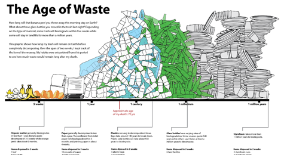
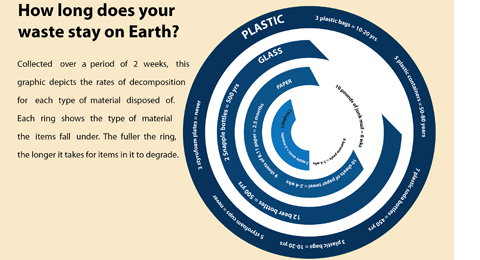
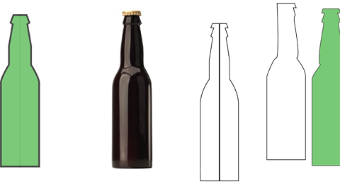
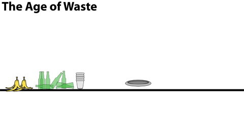

I created a graphic visualizing the trend of my waste habits.

This took several iterations and underwent varying forms of visualizations.

I used Adobe Illustrator to vectorize all shapes in the visualization.

It took a while to get there, but I eventually did...